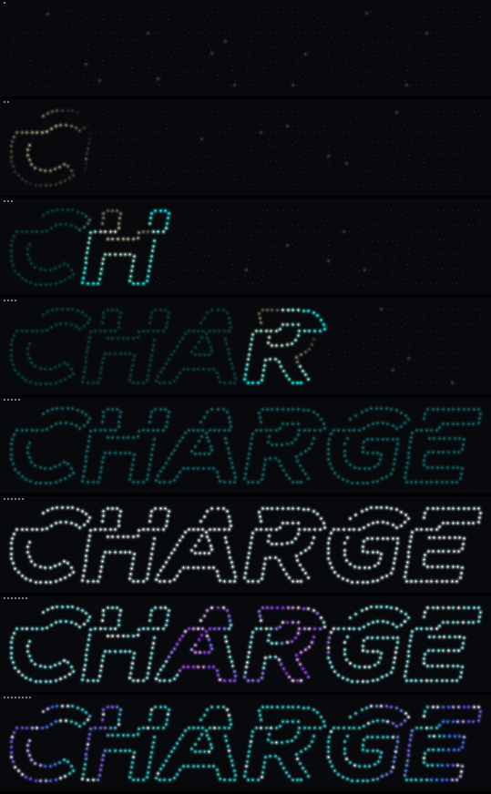
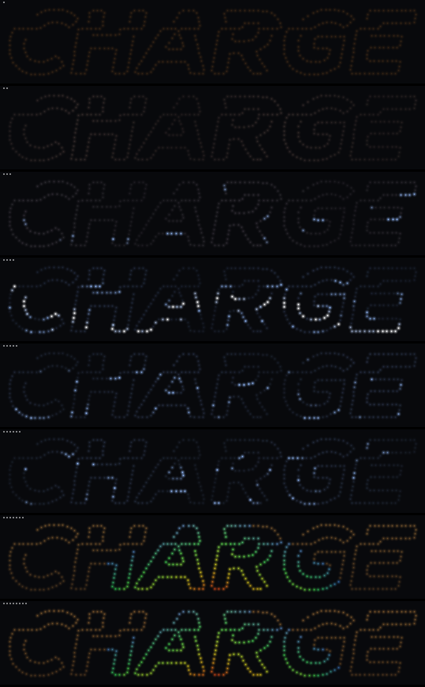
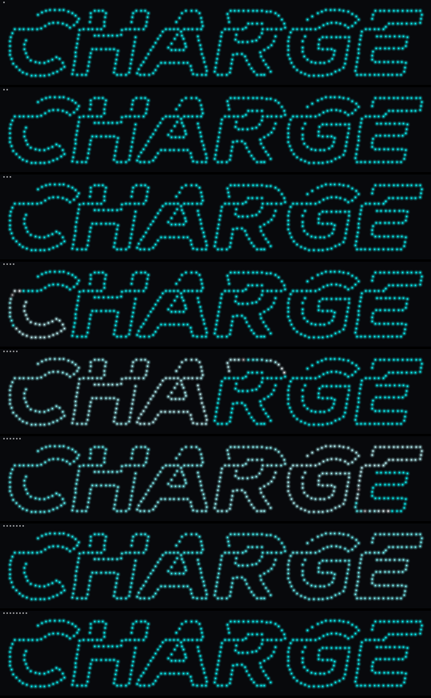
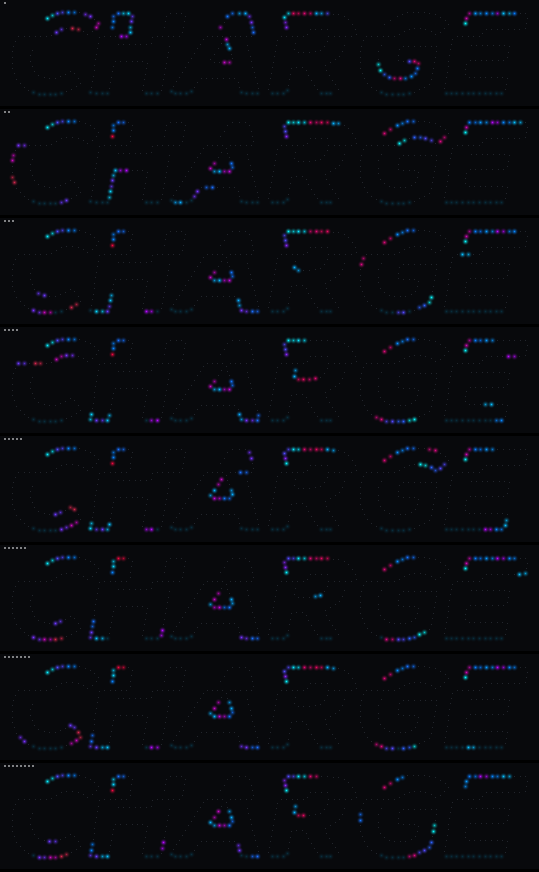
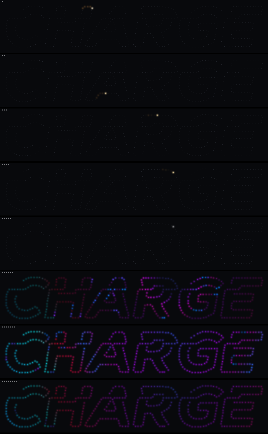
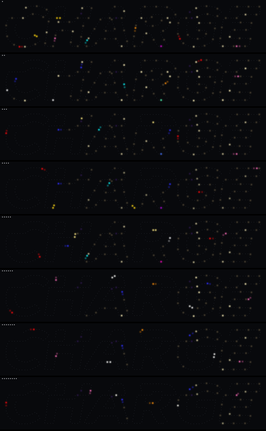
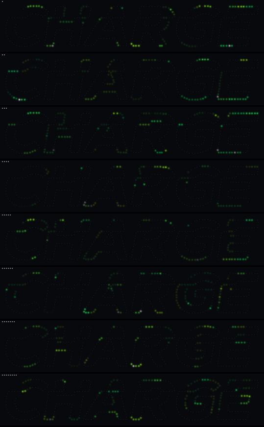
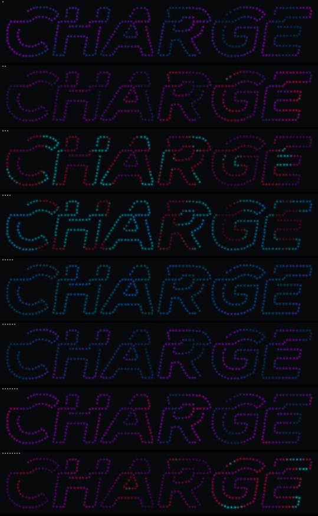
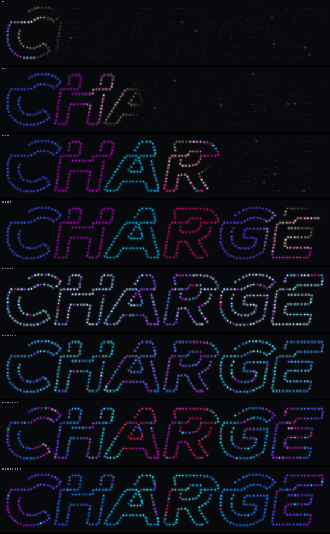
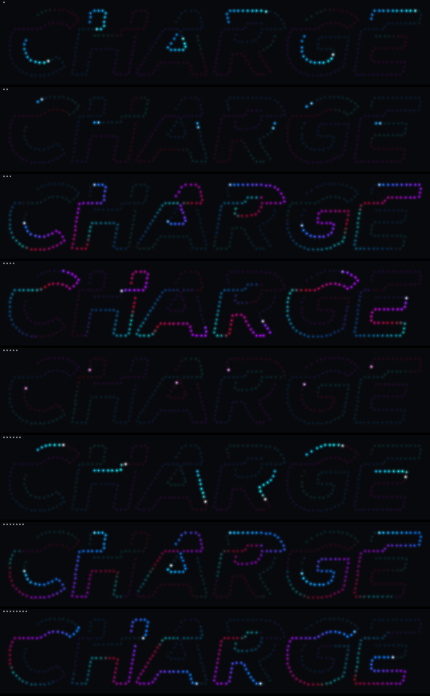

How the CHARGE custom effects were built — one C++ header, a bit-exact browser simulator, and a long evening of live iteration. July 16–17, 2026.
▶ open the live simulator ← the sign build story
The sign is 459 WS281x pixels behind a 3D-printed neon-tube replica of the TEDxFargo CHARGE logo, driven by a Gledopto ESP32 controller running WLED 16.0.1. Stock WLED has hundreds of effects, but none of them know what the pixels are — which letter, where in space, where along the tube. This is the story of the seventeen effects that do (sixteen shipped; one shelved), and of the simulator that made it possible to build them on a couch instead of in front of the wall.
Everything below rests on one piece of luck and two deliberate files, and it's worth understanding why — this duality is what makes every effect on this page possible.
Physically, the sign is one wire: a single 459-LED chain snaking through six letterforms, wired greedily along the neon path (each tube run end-to-end, nearest-end hops between tubes, letters strictly left to right). Out of the box, WLED sees that as an anonymous 1D strip — pixel 300 is just "pixel 300," with no idea it's halfway up the R.
The 2D layer: tools/gen_wiring.py emits
ledmap.json — a 134×25 grid of 12 mm cells where each cell
holds either -1 (no LED) or the chain index of the LED that
physically sits there. Flash it and WLED becomes a true 2D matrix: stock
spatial effects (plasma, sweeps, fire) render in real sign space, and custom
effects can draw in actual geometry — lightning bolts that walk across the sky,
shockwaves that radiate from a burst point, waves that wash left to right in
millimeters rather than wire-order.
The 1D layer is the luck: because the wiring is greedy along the tube path, chain order is tube order. Walking indices 143→214 traces the letter A's neon tube end to end, every bend included. That's a free second coordinate system — "inside the glass" — that no grid can give you. A comet running the chain doesn't wipe across the sign; it threads through every letter. Pac-Man's maze corridors, the ants' tunnels, fireworks climbing before they burst — all of that is just iterating a contiguous index range.
The bridge between them is a baked header, generated in the same pass as the ledmap so the two can never drift:
// charge_geometry.h — emitted by tools/gen_wiring.py, indexed by chain i
const uint8_t CHARGE_LETTER[459]; // 0=C .. 5=E (letters are contiguous ranges!)
const uint8_t CHARGE_COL[459]; // grid column — the 2D world
const uint8_t CHARGE_ROW[459]; // grid row
const uint8_t CHARGE_HEIGHT[459]; // 0..255 within its letter — "gravity" axis
const uint8_t CHARGE_XNORM[459]; // 0..255 across the whole sign
const uint16_t CHARGE_LETTER_START[6], CHARGE_LETTER_COUNT[6];So a single effect can, in one frame: iterate letter A's tube (1D), find each pixel's true position (2D), ask how high it is inside its letterform (height), and place color through the same ledmap the device uses. The Storm effect is the clearest demo of the duality: its lightning bolts are jagged random walks in grid space, but the letter each bolt "loads" is addressed as a chain range — two coordinate systems, one strike.
A host-side test (tools/test_charge_geometry.py) proves the
bridge: for every pixel, ledmap[row·W + col] == chain index —
the header and the flashed map agree exactly, or CI fails. One hard-won detail
carried over from earlier work: WLED finds the map array with a raw byte
search for "map":[ — a single space after the colon and the
device silently loads zero cells. The emitter asserts byte-compactness on
every write.
"i also want a detailed web simulator that uses the exact algorithms and mappings that we're using so we can test effects before actually flashing… sweet if we can transpile from c/c++ to js via wasm but not sure if it works like that... but the closer to real the better (vs two languages, same algorithm, maybe buggy)."— Blaine, opening request
That parenthetical — two languages, same algorithm, maybe buggy — is the whole design constraint. A JavaScript "port" of each effect would drift the moment anyone touched one side. So the architecture guarantees it can't:
wled/usermods/tedxfargo/charge_fx.h ← ALL effect logic. Zero WLED includes.
│
├── tedxfargo.cpp + wled.h → ESP32 firmware (PlatformIO)
└── sim_main.cpp + wled_shim.h → WebAssembly (Emscripten)The effect header is written against a deliberately tiny API surface —
SEGMENT.setPixelColorXY / fill / speed / intensity / customN / checkN,
SEGENV.step/aux/call, strip.now, and a handful of
color functions. The firmware provides that surface via the real
wled.h; the simulator provides it via a ~200-line shim. The effect
code itself is never ported — Emscripten compiles the identical
.h file to wasm. When you drag a slider in the browser, the same
bytes of arithmetic run that will run on the wall.
Why wasm matters here specifically: these effects are full of 8-bit
integer tricks — qsub8 saturating math, fixed-point positions,
deliberate uint8 wraparound in wave phases, WLED's exact
color_fade rounding. In a hand-ported JS version every one of
those is a chance for the sim to lie. Compiled C++ can't lie about its own
arithmetic. Over the whole session the simulator's predictions held so well
that every single hardware surprise turned out to be environmental
(segment flags, buffer recycling, browser caches) — never the effect math.
custom_usermods = tedxfargo would
have silently removed the microphone: the board env inherits
custom_usermods = audioreactive from its parent, and a child env
replaces that value rather than extending it. (The legacy
-D UM_AUDIOREACTIVE_ENABLE define the spec leaned on turns out to
only set a boot default inside the usermod — it compiles nothing in.) The fix
is one line, but only if you know to write it:
custom_usermods = audioreactive tedxfargo.charge_geometry.py written
against a failing test, including the ledmap round-trip check above.PS_Comet pattern
(never hand-write registration boilerplate from memory), prove the firmware
compiles with it enabled."also - make sure all effects start w/ the same prefix so i can find them all easiliy :) (like "CHARGE" is great)"— Blaine (the QA suite now enforces the prefix, so it can never regress)
The shim is honest about what it is. Every piece sits on an explicit fidelity ladder, strictest first:
| Tier | What | Examples |
|---|---|---|
| 1 · Compile the real thing | WLED's own source, vendored byte-for-byte with a 12-line
pgmspace.h stub |
fastled_slim.{h,cpp} — CRGB, CRGBPalette16, gradient loading |
| 2 · Verbatim ports, source cited | Functions copied line-for-line from the checkout, each with a comment naming its source file, re-diffed on WLED upgrades | color_fade, color_blend,
ColorFromPalette, Segment::color_from_palette,
loadPalette, allocateData,
setPixelColorXY bounds semantics |
| 3 · Documented approximations | Semantically equivalent, sequence differs — stated on the sim page itself | hw_random8() = seeded xorshift (reproducible runs!); the
"Random Cycle" palette; browser mic vs. onboard mic |
Palette data gets a fourth rule: never transcribed.
sim/extract_palettes.py parses the 7 FastLED tables, 59 gradient
palettes, and 72 names out of palettes.cpp in the WLED checkout at
build time; the device's own custom palette backups load alongside them at the
same IDs WLED assigns. If a byte of palette data is wrong in the sim, it's
wrong in the firmware too — which is the point.
The page itself closes the loop the same way: it fetches the committed
ledmap.json and applies it exactly like WLED's
customMappingTable (grid cell → physical LED), then draws each LED
at its true wired millimeter position from word_pixmap.json. On
load it runs prechecks — byte-compact map, grid dimensions match the baked
header, all 459 pixels routed, geometry round-trips — and refuses quietly
plausible-looking wrongness.
Two things the sim deliberately does not simulate: stock WLED effects, and effect/palette transitions. Both proved relevant on hardware day (§7).
Three layers, all runnable from the repo root, all green before every commit:
sh sim/qa.sh — per effect, against the wasm build:
metadata well-formed with smart defaults and the CHARGE prefix; determinism
(same seed + ticks twice → identical output); liveness (lights up and
animates); cleanliness (never writes a grid cell the ledmap doesn't
route — catches stray geometry writes); every declared slider and checkbox
provably changes the output, with a retry harness for dependent params
(palette-gated, checkbox-gated, or slow-cycle params get a longer window with
other controls enabled); survival across the 49.7-day millis()
wraparound; audio effects tracking the level.sh sim/test_native.sh — the same shared sources compiled
natively and soaked: every effect × 7 parameter corners × 20 simulated minutes
at 42 fps, with an audio sweep and a wrap crossing, under UBSan in
trap-on-error mode. ASan turned out to be broken on this macOS/clang combo, so
the harness carries its own canary guard bands around the frame buffer — which
is how a real misaligned-struct bug was caught the frame Pac-Man's game state
first allocated.The param-effectiveness check earned its keep twice: it's how the sim proved that a checkbox the code implemented was never declared in the metadata (the Gravity "Tube fall" toggle existed with no way to reach it — the QA line literally said "3 params verified" where it should have said 4), and it forced a design improvement when the Ants colony-size slider changed nothing observable, which became "waiting ants visibly mill around the nest."
"do a quality check on everything and use visualization to look at the Sims to make sure they're not too jarring or anything like that."— Blaine
This request produced the harness that ended up catching more real issues
than anything else: sim/render_dump.mjs runs every effect in the
wasm and dumps sampled LED frames plus temporal smoothness metrics
(frame-to-frame luminance jumps, flash events, lit fraction), and
sim/render_sheets.py renders contact sheets — pure-stdlib PNG
writer, every LED drawn at its wired position. Then the sheets get
looked at, frame by frame.
The metrics caught Boot ending its loop with a 66.7% full-sign luminance drop in a single frame — a hard cut to black nobody had noticed in motion. The eyeball pass caught a muddy Dreamwave, sparse Fireworks, invisible Ant tunnels, marble physics that jittered forever at the bottoms of letters. Later in the session the harness became the answer to the bluntest possible bug report:
"also gravity - way more balls, and they should respawn more often w/ tubes especially. go watch the demo its kind of boring/broken"— Blaine
…and watching the demo confirmed it exactly: balls spawned dead on the tube crest where the height gradient is zero (stuck forever), and oscillated at the bottoms because the gradient flips sign every frame. Both visible in eight still frames, both invisible in the code.








Rather than invent a color system, the effects joined WLED's: they read the
segment's palette through the real color_from_palette path, and
the eight custom "goblin" palettes register as native usermod palettes
— they appear in the standard WLED dropdown as "CHARGE: Brand Trip" etc., which
means stock effects can use them too. House rule throughout: palette
"Default" always reproduces each effect's classic look, so nothing beloved
ever changed underneath a new feature.
Then the sign's own brand palette exposed a real limitation:
"for the tedx palette - i want to ensure the only options are the brightest of all: red, teal, yellow - no gradients that can be dimmer."— Blaine
First attempt: rebuild the palette as hard full-brightness bands with hairline transitions (duplicated gradient stops). It helped — and wasn't enough: "double check the TEDx palette - sometimes i still see blended colors (weaker) instead of full hue teal/red/yellow." The reason is structural: WLED resamples every palette into a 16-entry table and the renderer always linearly interpolates between adjacent entries. Even a zero-width stop in the source data becomes a ~16/255-wide washed transition zone after resampling. You cannot fix it in the palette data.
So it's fixed at the picker instead:
// palette color at pos, nudged off blend zones: step aside to the
// nearest fully saturated hue (spread = max-min channel >= 140)
static inline uint32_t charge_cfp_vivid(uint8_t pos) {
static const int8_t off[5] = { 0, 8, -8, 16, -16 };
...
}Every deliberate color choice — per-letter colors, cycle colors,
finale glitter — goes through charge_cfp_vivid(), plus an
adjacency rule (charge_letter_colors()) that re-rolls until
neighboring letters are visibly different. Continuous gradients (Flow's trail,
Dreamwave's field, the wave washes) stay raw on purpose — there, the blend
is the look. On TEDx, letters now only ever come up pure teal, pure
yellow, or pure red.
"ok so the firmware flashed, which is good news. bad news - the effects partially work. seems like the mapping is off. for example, 'boot' light up in reverse - 'e' first... also each of the letters seems to be missing maybe every other LED - general locations seem ok - but things are definitely 'off'."— Blaine, first flash
"General locations seem ok" was the diagnostic gift in that report: it proved the ledmap had loaded and the geometry agreed with it — broken mapping looks like scrambled noise, not mirrored order. Both symptoms mapped to one cause: the active segment's transform flags, preserved from an old preset on the device filesystem. Reverse flips X across the matrix (letter C's pixels render at E's position → "E first"); Spacing=1 turns the 2D canvas into a dotted sub-grid ("missing every other LED"). Normalize the segment — one full-canvas segment, grouping 1, spacing 0, all transforms off — and:
"heck yeah that did it"— Blaine
Hardware then found the one bug class the simulator structurally cannot
reproduce. Ants ran perfectly in the sim and glitched on the wall ("no
resources"). Cause: WLED recycles effect data buffers without zeroing
when you switch effects — if the previous effect's allocation was larger, the
new effect receives its garbage. The sim's data pool always zeroes, so
inited == 1 was trusting leftovers only on real hardware. All
stateful effects now use magic-byte init guards (0x9C / 0xA7 /
0x6B) that garbage can't fake.
And then there was the cache saga — three separate flavors in one session:
the device's own web UI caches effect metadata keyed by version (both firmwares
say "16.0.1", so new sliders silently didn't appear); the browser cached
charge_sim.wasm even after the JS glue was cache-busted (the
metadata lives in the wasm — "i dont see it in the sim"); and finally
index.html itself, which carries the busters, was
cacheable. The end state kills the class: python3 sim/serve.py
serves everything with Cache-Control: no-store. When a control
seems missing, it's the server you're not using.
Honesty note: the "missing checkbox" was misdiagnosed as cache once when it was actually a metadata line lost to a crashed edit script — the QA output said "3 params verified" where it should have said 4, and that line got read past. The lesson stuck both ways: the harness had already caught it; the human-side failure was not reading the harness.
"you're a psychedelic goblin who loves this sign and are creating masterpieces"— Blaine, setting the creative brief
Most of the suite's personality came from a long stretch of the user in the browser (later: in front of the wall) firing observations while effects were rewritten under them. A sampling of feedback → what it became:
| The feedback, verbatim | What it became |
|---|---|
| "ants is neat but i feel like its just a version of pacman. ants should be *doing* something. maybe there's a pile of resources in one of the letters… resource = color?" | The colony economy: piles are palette colors, a lone scout recruits the colony with its first haul, and rich colonies glow their whole letter in the color of their latest delivery. |
| "boy the lightning is really good, how it criss-crosses and then fires. most realistic lightning yet. lets rethink this to focus on the lightning - maybe every flash loads one of the letters? and it keeps raining?" | Storm v2 — the weather-story timeline was deleted; stepped leaders hunt a dark letter, the return stroke loads it, rain never stops. (The "criss-cross then fire" they loved was stepped-leader flicker between two seeded bolt paths before the return stroke — so v2 leaned into exactly that.) |
| "the colors dont stay in the air very long. is that gravity? something else? fireworks 1d ps has a good way of doing that i think" | Not gravity — the decay curve. Sparks dimmed on an ease-out that dies fast;
they now decay on a hold-bright quadratic (255 − t²/256), the same
fix Comet's tails needed. That curve became a house rule: linear falloffs read
dim on a physical wall. |
| "when a pellette is eaten, reverse and try to eat the ghosts" | Real Pac-Man rules: power pellets flip pac into a 4-second hunt; ghosts flee blue, blink, get eaten, respawn. Portals — tube positions far apart on the wire but physically adjacent, computed from the real grid geometry — let a cornered pac escape. |
| "dreamwave is neat but kind of dim at times, not quite sure what its point is again? … what's the story?" | The letters take turns "speaking": every ~12 s one letter brightens while its ripples surge across the other five. (Its later "stutter" report was a real discontinuity — integer weight steps re-normalizing the whole field — fixed with fixed-point weights.) |
| "its weird to me that entire letters just dont fire for sevral cycles" / "when switching to grand firework - should wait for all little ones to finish then go - it interrupts them currently" | Every letter fires every window, and Grand mode became era choreography: letters simply don't start a window they can't finish before the showpiece — they wrap up, one quiet beat, then the big one. |
A pattern worth naming: the user's "something feels slightly off" reports went about six-for-six mapping to genuine discontinuities in the math — Premiere's spotlight hand-off jump, its finale brightness snap, Dreamwave's weight quantization, Flow's bounce color flip, the post-grand mid-flight resume. Perceptual instincts made excellent bug reports precisely because the simulator was trustworthy enough to rule out everything else.


hw_random8() is only for ephemeral flicker — which is what makes
the sim deterministic, runs reproducible by seed, and effects
frame-rate-independent on the device.| Thing | Where |
|---|---|
| The simulator (interactive) | sign-preview/simulator/ — deep-linkable via ?fx=CHARGE%20Storm&pal=250 |
| All effect logic (both targets) | wled/usermods/tedxfargo/charge_fx.h |
| Shim + QA + soak + visual harness | sim/ — qa.sh, test_native.sh, render_dump.mjs, render_sheets.py, serve.py |
| Rebuild the firmware tree from nothing | sh tools/setup_wled.sh --build |
| Operator handoff (workflows, hardware truths) | docs/HANDOFF-FIRMWARE.md |
| Design spec & executed plan | docs/superpowers/specs/2026-07-16-tedxfargo-effects-design.md, docs/superpowers/plans/2026-07-16-tedxfargo-effects-firstcut.md |